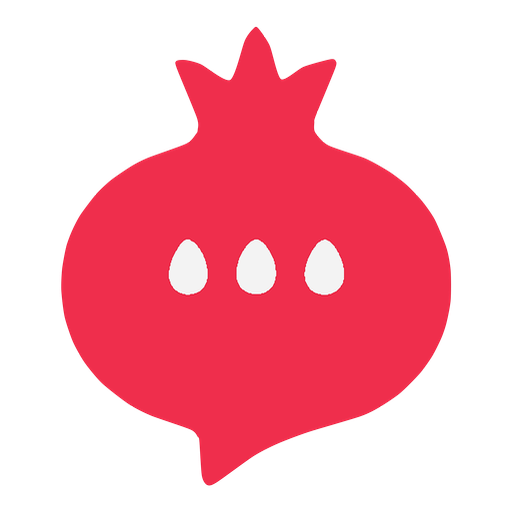

NarTalkTelegram-da data toplama platforması üçün dizayn sistemi. Rəng, tipoqrafiya və məsafə tokenləri, .nt-* CSS sinif qatı, 31 React komponent modulu və dörd tam məhsul ekranı.
nartalk.com səhifəsi — hero, necə işləyir, imkanlar, qiymətlər, footer.
Ümumi baxış, botlar, cavablar cədvəli və detal paneli. ⌘K əmr paneli işləyir.
Flow canvas, node inspector, forma blokları, məntiq qaydaları, paylaşma.
API açarları, webhook log, OTP idarəetməsi, komanda və icazə matrisi.
thumbnail.html
Stil giriş nöqtəsistyles.css
Komponent və token manifesti_ds_manifest.json
Lint qaydaları_adherence.oxlintrc.json
Dizayn bələdçisireadme.md
Agent skill sarğısıSKILL.md